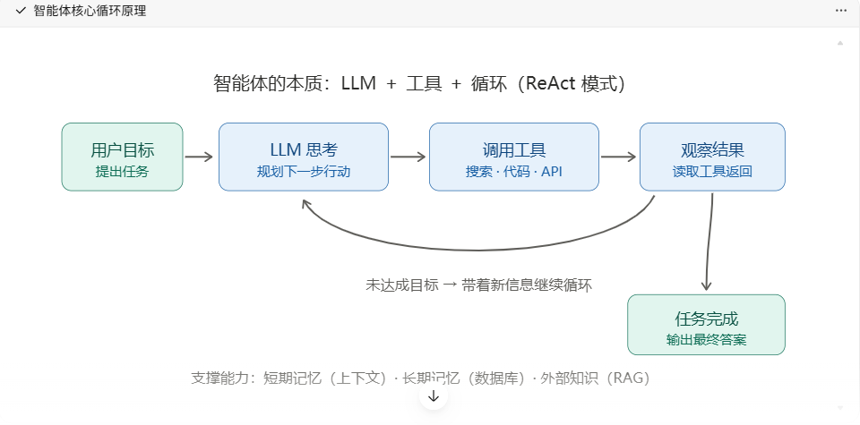

核心一句话：Agent = LLM（大脑）+ 工具（手脚）+ 记忆（上下文/向量库）+ 规划（Prompt/循环）
让模型从”只会聊天”变成”能干活、会决策、可循环执行任务”的程序。
一、Agent 核心基础概念
-
Agent 是什么
一个能自主感知 → 思考决策 → 调用工具 → 观察结果 → 继续决策直到完成目标的循环程序。

-
ReAct 模式（Agent 的灵魂）
Reasoning【推理】 + Acting【行动】：让 LLM 交替输出”思考”和”行动”。
Thought: 我需要先查一下北京天气 Action: get_weather[北京] Observation: 晴，28度 Thought: 拿到结果，可以回答了 Answer: 北京今天晴，28度两种实现：手写 Prompt 约定格式（原理课用）/ 模型原生 Function Calling（工业推荐）
-
工具（Tools / Function Calling）
- 工具 = 你写给 Agent 调用的普通函数（查数据库、调 API、执行代码）
- 关键：把函数的名称、用途、参数说明用 JSON Schema 描述给模型，模型只输出”调哪个+传什么”，真正执行永远在你的代码里
- 安全红线：工具返回的内容是”模型可见的输入”，别把敏感信息直接回给模型；危险操作（删除、支付）必须加人工确认
-
记忆（Memory）
-
规划（Planning）
复杂任务先拆步骤再执行。简单任务单循环就够，别过度设计。
二、学习路径（按顺序练，每步都能跑出东西）
阶段 1：手写 ReAct 原生 Agent（理解原理，最重要）
不借助任何框架，纯 Prompt + while 循环 + 2~3 个工具（如：加计算器、查天气）。
Prompt 写死格式（Thought/Action/Observation）
→ while True: 调 LLM → 解析出 Action → 执行 → 拼回 Observation → 直到输出 Answer
✅ 走通这一步，Agent 对你就不黑盒了。后面所有框架只是帮你把这个循环工程化。
📄 示例 Demo 见 _Demo.阶段1&2 ——agent_react.py（两工具 + 注册表，实测可跑）
阶段 2：原生 Function Calling 版 Agent
用模型自带的 tools 参数 + tool_calls 返回值重写阶段 1，体会两种方式的稳定性差异。
📄 示例 Demo 见 _Demo.阶段1&2 ——
agent_fc.py（与阶段 1 同任务，只换”声明工具”和”解析输出”两处，对比着看）
阶段 3：加记忆与 RAG
- 接入向量库（先用内存列表手写余弦检索，再换 FAISS / Chroma）
- 给 Agent 加一个
search_knowledge工具，实现”知识库问答 Agent”
📄 示例 Demo 见 _Demo.阶段3.模拟向量库 ——
agent_kb.py（内存向量库 + 手写余弦检索 + FC Agent，实测可跑，含三个踩坑实录）
📄 Chroma 版见 _Demo.阶段3.Chroma版 ——agent_chroma.py（同一任务只换存储层，体会”Embedding 归你管，存检归向量库管”）
阶段 4：多工具真实场景 Agent
做一个能解决真实问题的小项目（任选）：
- 数据库查询 Agent（自然语言 → SQL → 查库 → 总结）
- 网页信息 Agent（搜索 + 网页读取 + 汇总）
- 运维/办公自动化 Agent（读文件、发通知、执行脚本）
阶段 5：框架与工程化（会原理后再上框架）
| 框架 | 特点 | 建议 |
|---|---|---|
| LangChain / LangGraph | 生态最大，LangGraph 用图管理多步/多 Agent 流程 | 主流首选，学 LangGraph |
| Dify / Coze | 低代码平台，拖拽搭 Agent | 快速出 demo / 非程序员协作 |
| 多 Agent 协作 | 规划者 + 执行者 + 审查者分工 | 高级玩法，简单场景别用 |
工程化重点：错误重试、超时控制、工具权限管控、日志追踪（每步的 Thought/Action 落日志）、成本统计（token 计费）。
三、Agent 开发避坑清单
- 不要一开始就上框架，先手写 ReAct，否则出问题完全不会排查
- 工具描述写清楚：模型选错工具 90% 是因为工具 description 写得烂
- 循环要有终止条件：最大循环次数兜底，防止 Agent 死循环烧 token
- temperature 设 0：工具调用、结构化输出要确定性
- 幻觉应对：让模型必须基于工具返回的真实数据回答，而不是凭空编
- 上下文膨胀：多轮工具调用后 messages 越来越长，及时摘要压缩
- 危险操作加确认：执行前让用户点一下，或加白名单